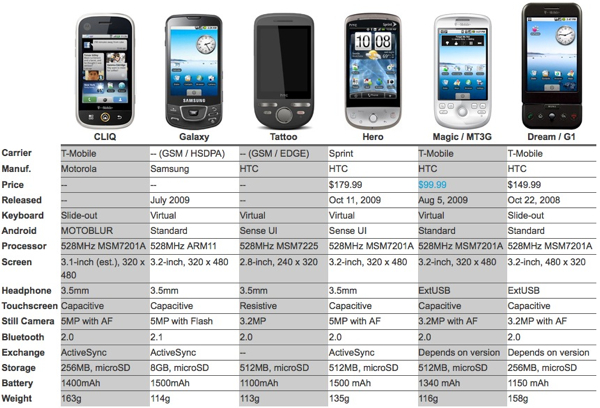
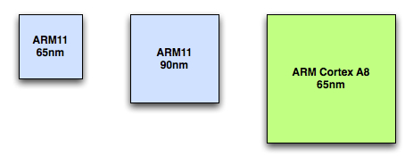

Which Android Phone Is For Me?
Android has been really gaining steam these past couple of months. Yesterday, Techcrunch posted a thorough list of Android phones covering everything current through the rumored ones. It’s great to see everything laid out in one place which highlights one of the platforms strengths: diversity. Some are big, some are small, some have keyboards, some are all screen. The downside is finding the right phone which encompasses everything I want.

Nearly a year ago I said all I wanted was “a Dash form factor running the Android OS with 3G support.” A lot has changed since then, including my expectations of phones. It is clear the Dash form factor won’t be coming with Android anytime soon. Rectangular screens are the norm which is better for web browsing and typing messages. Every Android phone being released from now on has 3G support since smartphones are built with higher-margin data plans in mind. Carriers like that. So it should be no problem finding an Android phone for me, right?
Wrong. The only Android phones available as of this writing are the G1 and the myTouch3G, both of which are on T-mobile. They both have been labeled as “slow” and somewhat clunky. I played with the myTouch3G for a bit and realized the screen is too small for a phone with no keyboard. The upcoming Motorola Cliq looks like it could be the phone for me. Reviewers deem the keyboard quite good, solid build quality, and great social networking integration. The biggest problem I see? It uses the same Qualcomm 528MHz ARM11 processor the other two Android phones use. Engadget has an excellent overview of mobile processors powering all these Android devices which sheds some light as to why this processor is less than ideal.

If I get the Cliq, I’ll be locked into a 2 year contract based on current plans offered by T-mobile (this could change soon thanks to Project Dark.) Between now and then I expect to see a heck of a lot more powerful phones come to market and I would have to pay a lot more to get out of my contract in order to upgrade. As phones get more powerful, widgets will start to become more demanding as they take advantage of this power. I just don’t think now is the time to commit to a phone being pushed out with past-prime tech that barely runs now. Perhaps I’m just being a bit too critical.
But alas the Verizon Droid is being touted as the first real iPhone competition from the Android camp. It uses a newer processor design, comes with a huge display, includes a physical keyboard, and it will be the first phone to come out with Android 2.0 and all the new features that come with it. This phone should be available to the public in November. The downside to this is Verizon plans are expensive, especially their data plans.
So in the end, I’ll continue to sit out of the Android game and squeeze more life out of my T-Mobile Dash running on the ancient Windows Mobile 5. As soon as I’m about to make a decision rumors swirl that something better is just around the corner. Sure it will always be like that, but Android is still in it’s infancy and competition is starting to heat up. One of these days, some company will find the right combination.

I’m with you on the current state of Android hardware. Moto Droid looks good, but I like Tmo’s cheap plans.
By the way, I loved my old Dash as well, but only after upgrading to Windows Mobile 6.0! It makes a big difference. It’s a free upgrade from T-Mobile. http://www.t-mobile.com/WMupgrade/
Hey, maybe someday we’ll be able just to run Android on our Dashes! http://forum.xda-developers.co.....p?t=435934
Reply
I’ve been waiting for the perfect android/(monthly price) combination. Hopefully, the droid will be available on other networks soon, or have a better price. :-\ I currenly pay $5/month for a virgin mobile phone.. $90/month is a big jump. 😉
Reply
There are rumors of a GSM version of the Droid floating around but I wouldn’t hold my breath about it reaching the states anytime soon.
Go-on… just get an iPhone. You won’t regret it 😉
Reply
I will regret it every month when I look at my sky high bill!